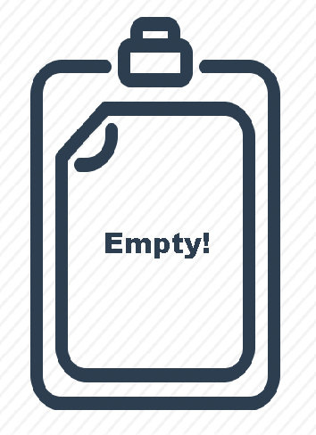

<ion-header>

  <ion-navbar color="consumption">
    <div style="display:flex;">
        <ion-title text-center>My Consumption</ion-title>
        <ion-buttons text-end>
          <button ion-button (click)="resetConsumption()" icon-only large><ion-icon name="refresh"></ion-icon></button>
        </ion-buttons>
    </div>
  </ion-navbar>

</ion-header>


<ion-content padding>

<div *ngIf="length">

</div>

<div *ngIf="!length">
<ion-card *ngFor="let food of ConsumedFoodList$ | async" style="position:relative">
<button style="position: absolute;top:0;right:0;color: rgb(107, 0, 128)" ion-button icon-only small clear (click)="deleteFood(food)"><ion-icon name="trash"></ion-icon></button>
    <ion-card-header>
      {{food.name}}
    </ion-card-header>
    <ion-card-content>
      <h3>Consumed : {{food.quantity}} {{food.measure_in}}</h3>
      <h3>Total Calories : {{food.totalCalories}}</h3>
    </ion-card-content>
</ion-card>
</div>

<!-- <div *ngIf="totalCaloriesInDB$">
    <div *ngFor="let food of totalCaloriesInDB$ | async" ></div>
</div> -->

</ion-content>
